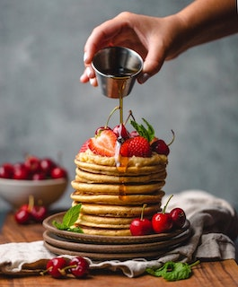

Pannekaker
Keep calm and eat pancakes.
Se oppskrifter her.
Keep calm and eat pancakes.
Se oppskrifter her.
The only bad burger is the one you didn't eat.
Se oppskrifter her.
You can't make everyone happy. You're not pizza.
Se oppskrifter her
Norge er det landet i verden som spiser mest brød. Kneippbrødet er det desidert mest bakte brødet. Da kneippbrødet kom til Norge på slutten av 1800-tallet ble det raskt en av de sentrale elementene i oslofrokosten, opphavet til den norske matpakkekulturen, som ble servert alle skolebarn i Oslo-området fra 1935.
I dagens samfunn elsker nordmenn fortsatt kneipp. Alle som vokser opp i Norge har et forhold til brødskive med pålegg. Kneippbrød med makrell i tomat er en hverdagsklassiker. Det ikke alle vet, er at da kneippbrødet ble funnet opp av den tyske presten og professoren Dr.Kneipp, markedsførte han brødet ved at det kunne hjelpe til med å forhindre at befolkningen onanerte.